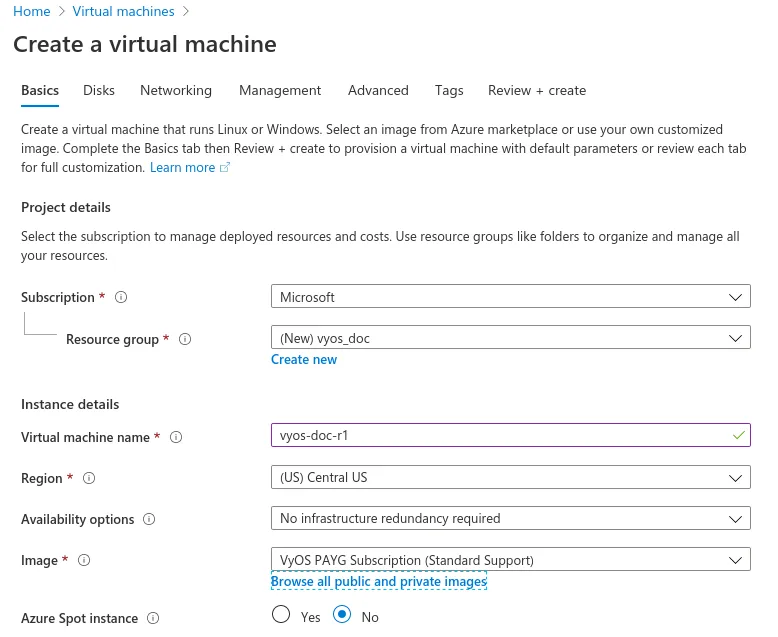
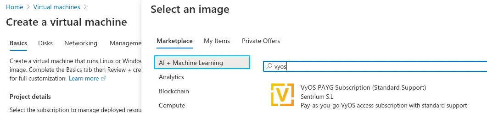
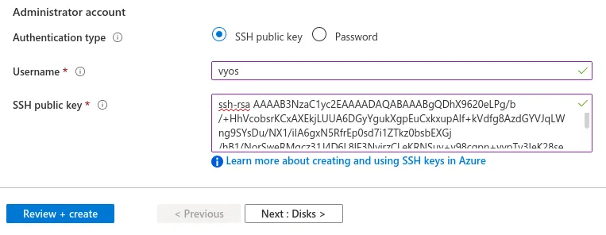
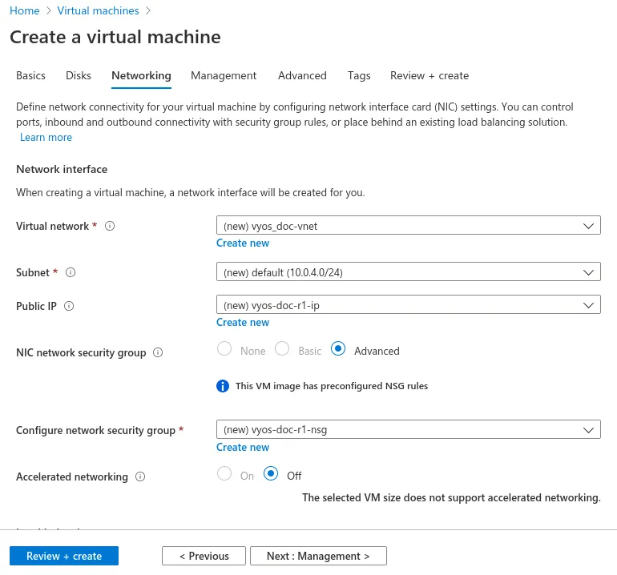
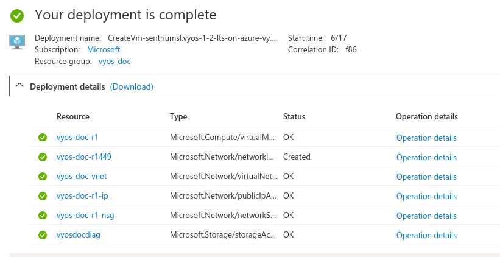
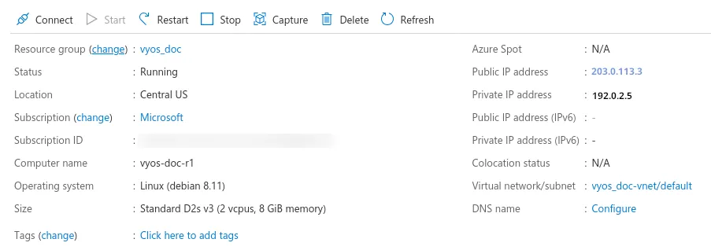

Azure
Deploy VM
Deploy VyOS on Azure.
Go to Azure services and click Add new Virtual machine.
Choose a VM name, resource group, and region, then click Browse all public and private images.

Search for “VyOS” in the marketplace and choose the appropriate subscription.

Generate new SSH key pair or use existing.

Configure the network, subnet, and public IP. Or use the defaults.

Click Review + create. Your deployment completes in a few seconds.

Select your new VM and note your public IP address.

Connect to the instance with your SSH key.
ssh -i ~/.ssh/vyos_azure vyos@203.0.113.3 vyos@vyos-doc-r1:~$
Add interface
If your instance was deployed with one eth0 (WAN) interface and you
want to add another, you must shut down the instance. To add a new interface,
such as eth1 (LAN), attach it in the Azure portal and then restart the
instance.
Note
Azure doesn’t allow you to attach an interface while the instance is running.
Absorbing Routes
If you’re using the VM as a router, you can use a route table to send some or all traffic from your virtual network (VNET) through your LAN interface.
Enable IP forwarding on every Azure network interface that will forward traffic. In the Azure portal, open the network interface, select IP configurations, and enable IP forwarding. Alternatively, use the Azure CLI:
az network nic update \ --resource-group <resource-group> \ --name <network-interface> \ --ip-forwarding true
Create a route table and navigate to Configuration.
Add one or more routes for the networks you want to route through the VyOS VM. For Next hop type, select Virtual Appliance and set the Next Hop Address to the private IP address of the VyOS
LANinterface.Associate the route table with each workload subnet whose traffic should pass through VyOS.
Note
To create a default route for VMs on the subnet, use
Address Prefix 0.0.0.0/0. For a typical edge device configuration,
configure masquerade NAT on the WAN interface.
Serial Console
VyOS includes serial console support by default. However, if you replace the
config.boot file and reboot, ensure this configuration is present:
set system console device ttyS0 speed '9600'